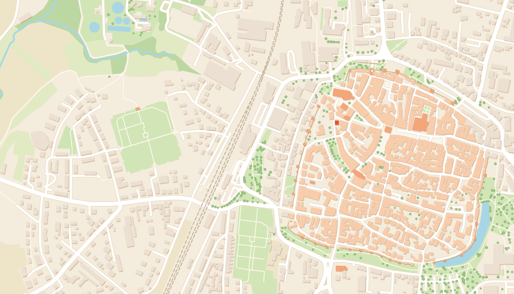

Ferienwohnung Bischoff · Weißenburg
Mittendrin in der Altstadt.
Gemütlich wohnen in einem Baudenkmal von 1744 – Marktplatz, Römermuseum und Ellinger Tor liegen direkt vor der Haustür.
Kartendaten © OpenStreetMap-Mitwirkende
Galerie
Die Wohnung in Bildern
Tippen oder klicken Sie auf ein Foto, um es groß anzusehen.


Ausstattung
Die Wohnung auf einen Blick
- Gästeideal für 2, möglich für 3
- SchlafenDoppelbett + Schlafsofa
- WLANvorhanden
- Parkenkostenloses Parkhaus, 2 Gehminuten
Küche
- Kochinsel mit Kochfeld
- Backofen
- Kapsel-Kaffeemaschine
- Wasserkocher
- Tresen mit zwei Barhockern
Wohnen & Schlafen
- Ausziehbares Sofa als zusätzliche Schlafmöglichkeit
- Fernseher
- WLAN
- Doppelbett mit Nachttisch
- Kleiderschrank, Kommode & Garderobe
Bad
- Große begehbare Dusche
- Spiegelschrank
- Handtuchheizkörper
- Föhn
- Handtücher
Lage
Mitten in der Altstadt – alles zu Fuß
Die Wohnung liegt im ehemaligen Pfarrwitwenhaus von 1744–46, einem Baudenkmal in der Pfarrgasse direkt am Martin-Luther-Platz. Museen, Cafés, Restaurants und der Marktplatz sind nur ein paar Schritte entfernt, und mit Stadtmauer, Römerkastell und Thermen hat Weißenburg viel zu entdecken.

- PKostenloses ParkhausParkhaus Doerfler-Villa2 Min.
- 1St. Andreas, Römermuseum & Tourist-Infoam Martin-Luther-Platz1 Min.
- 2Marktplatz & Altes RathausCafés, Eisdielen, Wochenmarkt3 Min.
- 3Ellinger TorWahrzeichen der Stadtmauer3 Min.
- 4Spitaltorsüdliches Stadttor3 Min.
- 5Kulturzentrum KarmeliterkircheKonzerte & Veranstaltungen4 Min.
- 6BahnhofAnreise ohne Auto6 Min.
- 7SeeweiherSpazieren an der Stadtmauer8 Min.
- 8Römerkastell Biricianarekonstruiertes Nordtor9 Min.
- 9Römische Thermeneine der besterhaltenen Badeanlagen Süddeutschlands14 Min.
Gehzeiten ungefähr, zu Fuß ab der Wohnung.
Ausflüge in die Umgebung
- Festung Wülzburgca. 2,6 km
- Bergwaldtheaterca. 1,8 km
- Großer Brombachseeca. 12 km
- Altmühlseeca. 21 km
Entfernungen Luftlinie. Weißenburg liegt im Naturpark Altmühltal und gehört zum Fränkischen Seenland.
Ankommen
So finden Sie die Tür
Der Eingang zur Ferienwohnung liegt nicht vorne an der Straße, sondern in der kleinen Gasse hinter dem Haus.
-
1
Vor dem Haus
Pfarrgasse 3 ist das Haus mit den grünen Fensterläden. Die große Holztür vorne ist nicht der Eingang zur Ferienwohnung.
-
2
Links in die Gasse
Gehen Sie von der Holztür aus nach links bis zur Hausecke und dort in die schmale Gasse zwischen dem Haus und dem gelben Nachbarhaus, die hinter das Haus führt.
-
3
Die Tür am Ende der Gasse
Am Ende der Gasse ist die Tür zur Ferienwohnung.
Kontakt
Preis & Reservierung
Melden Sie sich einfach direkt bei mir – telefonisch oder per E‑Mail.
90 € pro Nacht
zzgl. Endreinigung
- Ideal für 2 Personen, möglich für 3 (Schlafsofa)
- Reservierung ausschließlich per E‑Mail oder Telefon
- Bezahlung nur in bar
Fabian Bischoff
Ihr Gastgeber in Weißenburg
- Telefon
- +49 1515 8121835
- E‑Mail
- fabian.bischoff99@gmail.com
- Adresse der Wohnung
- Pfarrgasse 3, 91781 Weißenburg in Bayern